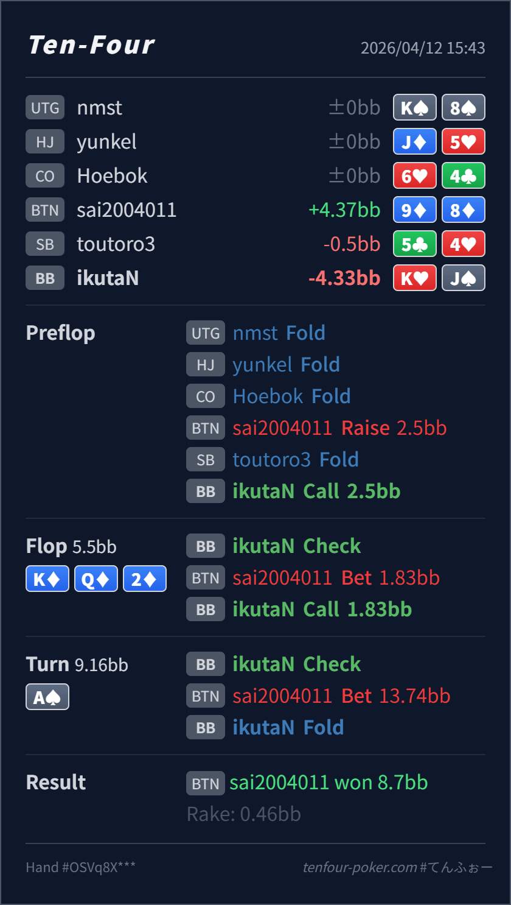

Preflop
良いK♥J♠ は BB defend として十分自然です。
主論点は、BB defend 後の K♦ Q♦ 2♦ で K♥J♠ をどこまで continue し、A♠ turn の 150%pot overbet に対してどの bluff-catch bucket まで残すかです。結論は、preflop defend と flop call は大筋で自然で、turn fold はかなり良い整理です。いちばん大事なのは、monotone flop の小さい c-bet を弱さと決めつけず、逆に pot が大きくなるほど no-diamond の one-pair を早めに手放すことです。
K♥J♠9♦8♦K♦ Q♦ 2♦ / A♠K♦ Q♦ 2♦ の monotone flop では、BTN は小さいサイズを高頻度で使いやすく、1.83BB は弱さのサインではありません。K♥J♠ は top pair ですが diamond を持たず、強い continue ではなく中間の check-call 寄りです。A♠ turn で pot が大きくなり、しかも 150%pot の overbet まで出ると、BTN range は flush、JT、高い diamond blocker を使った bluff にかなり寄ります。K♥J♠ は gutshot を得ても、no-diamond の one-pair としては降りて問題ありません。K♥J♠9♦8♦2.5BB, BB callK♦ Q♦ 2♦ / A♠1.83BB, BB call13.74BB, BB fold9♦8♦
良いK♥J♠ は BB defend として十分自然です。
K♦ Q♦ 2♦良いK♥J♠ は top pair ですが diamond を持たず、raise で取りにいく hand ではなく 1回 call に留めやすい中間強度です。
A♠良い foldK♥J♠ は gutshot を得ても、overbet defense の主力にはならない combo です。
| 論点 | その場で起きがちな見え方 | どこがズレたか | 次回の基準 |
|---|---|---|---|
| monotone flop の size 解釈 | 1/3pot は軽い stab に見え、top pair は自動で広く守りたくなる | monotone flop では小さい c-bet 自体が標準寄りで、安いから続ける だけでは守りすぎになりやすいです。K♥J♠ は call 候補ではありますが、diamond なしの中間 continue として扱うのが本筋です。 | monotone flop で diamond を持たない pair を続けるときは、次の street で降りるカードと size を先に決めておく |
| pot が膨らんだ後の one-pair 守備 | top pair や gutshot があれば、相手の大サイズにもつい粘りたくなる | monotone board で pot が大きくなると、one-pair の価値は pair の強さ より flush blocker を持つか に強く左右されます。K♥J♠ のような no-diamond combo は、見た目より早く defense の下側へ落ちます。 | monotone board の overbet 対応では、まず high diamond や two pair 以上を残し、diamond なしの Kx は fold baseline でよい |
| ストリート | その時点の見え方 | 実ハンドの位置づけ | 評価 | その場の一手 |
|---|---|---|---|---|
| Preflop | BTN open range はかなり広く、BB は broadway、suited hand、Ax、pocket を広く defend できます。 | K♥J♠ は BB defend として十分自然です。 | 良い | ここは Call で問題ありません。 |
Flop K♦ Q♦ 2♦ | BTN の小さい c-bet には flush、A♦x、Kx/Qx、air の一部まで広く残ります。 | K♥J♠ は top pair ですが diamond を持たず、raise で取りにいく hand ではなく 1回 call に留めやすい中間強度です。 | 良い | check-call で進めて問題ありません。 |
Turn A♠ | flop bet-call 後の BTN には flush、JT、A♦x、一部の高diamond blocker bluff が残ります。A は BTN の Ax も押し上げます。 | K♥J♠ は gutshot を得ても、overbet defense の主力にはならない combo です。 | 良い fold | fold で十分です。継続するなら少なくとも高diamond や two pair 以上を優先したいです。 |
| River |
小さい = 弱い ではありません。まずは range bet に近いものとして受け取ると整理しやすいです。まだ top pair かどうかより、flush blocker を持つか、相手の polar size に何を残せるか を先に見ると、turn の判断がかなり安定します。K♥J♠ のような no-diamond one-pair はさらに降りやすくて大丈夫です。Kx から無理に広げる必要はありません。